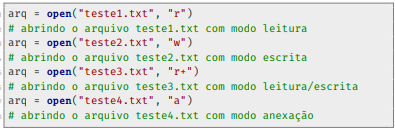
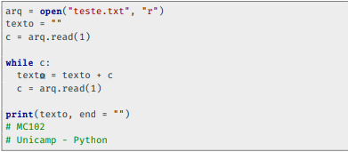
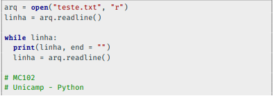
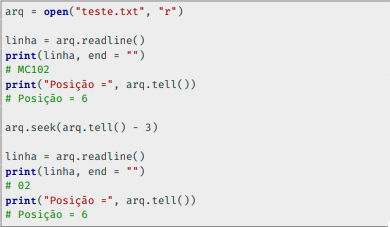
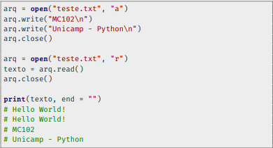
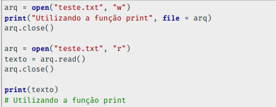

Existem dois tipos de arquivos:os arquivos de texto,que podem ser mostrados diretamente na tela,e os arquivos binários que são uma sequência de bits gerados,aos quais o ser humano não consegue interpretar.
Para abrir um arquivo utilizamos a função OPEN, que recebe como parâmetro o nome do arquivo incluindo o seu caminho e o modo escolhido.
entre os modos temos:
.R : modo leitura
.w : modo escrita
.R+ : modo leitura + escrita
.A : modo de anexação
obs: Ao abrir um aquivo no modo W,seu conteúdo será primeiramente apagado.
Exemplo de como ler os dados de um arquivo caractere por caractere:
O método readline retorna uma string referente a uma linha do arquivo.
Para isso, o arquivo deve ser aberto no modo de leitura (r) ou leitura/escrita (r+).
Podemos usar os métodos seek e tell combinados para alterar a posição do arquivo com base na posição atual.
O método close é usado para fechar um arquivo que foi aberto.
Ele garante que os novos dados serão efetivamente escritos no arquivo.
A função print também pode escrever dados em um arquivo.
Basta utilizar o parâmetro file, indicando em qual arquivo aberto, a mensagem deve ser escrita.
